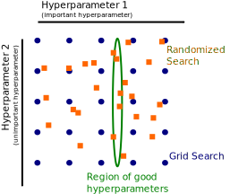

Hyperparameter tuning by randomized-search
Contents
Hyperparameter tuning by randomized-search¶
In the previous notebook, we showed how to use a grid-search approach to search for the best hyperparameters maximizing the generalization performance of a predictive model.
However, a grid-search approach has limitations. It does not scale when the number of parameters to tune is increasing. Also, the grid will impose a regularity during the search which might be problematic.
In this notebook, we will present another method to tune hyperparameters called randomized search.
Our predictive model¶
Let us reload the dataset as we did previously:
from sklearn import set_config
set_config(display="diagram")
import pandas as pd
adult_census = pd.read_csv("../datasets/adult-census.csv")
We extract the column containing the target.
target_name = "class"
target = adult_census[target_name]
target
0 <=50K
1 <=50K
2 >50K
3 >50K
4 <=50K
...
48837 <=50K
48838 >50K
48839 <=50K
48840 <=50K
48841 >50K
Name: class, Length: 48842, dtype: object
We drop from our data the target and the "education-num" column which
duplicates the information with "education" columns.
data = adult_census.drop(columns=[target_name, "education-num"])
data.head()
| age | workclass | education | marital-status | occupation | relationship | race | sex | capital-gain | capital-loss | hours-per-week | native-country | |
|---|---|---|---|---|---|---|---|---|---|---|---|---|
| 0 | 25 | Private | 11th | Never-married | Machine-op-inspct | Own-child | Black | Male | 0 | 0 | 40 | United-States |
| 1 | 38 | Private | HS-grad | Married-civ-spouse | Farming-fishing | Husband | White | Male | 0 | 0 | 50 | United-States |
| 2 | 28 | Local-gov | Assoc-acdm | Married-civ-spouse | Protective-serv | Husband | White | Male | 0 | 0 | 40 | United-States |
| 3 | 44 | Private | Some-college | Married-civ-spouse | Machine-op-inspct | Husband | Black | Male | 7688 | 0 | 40 | United-States |
| 4 | 18 | ? | Some-college | Never-married | ? | Own-child | White | Female | 0 | 0 | 30 | United-States |
Once the dataset is loaded, we split it into a training and testing sets.
from sklearn.model_selection import train_test_split
data_train, data_test, target_train, target_test = train_test_split(
data, target, random_state=42)
We will create the same predictive pipeline as seen in the grid-search section.
from sklearn.compose import ColumnTransformer
from sklearn.preprocessing import OrdinalEncoder
from sklearn.compose import make_column_selector as selector
categorical_columns_selector = selector(dtype_include=object)
categorical_columns = categorical_columns_selector(data)
categorical_preprocessor = OrdinalEncoder(handle_unknown="use_encoded_value",
unknown_value=-1)
preprocessor = ColumnTransformer([
('cat_preprocessor', categorical_preprocessor, categorical_columns)],
remainder='passthrough', sparse_threshold=0)
from sklearn.ensemble import HistGradientBoostingClassifier
from sklearn.pipeline import Pipeline
model = Pipeline([
("preprocessor", preprocessor),
("classifier", HistGradientBoostingClassifier(random_state=42, max_leaf_nodes=4)),
])
model
Pipeline(steps=[('preprocessor',
ColumnTransformer(remainder='passthrough', sparse_threshold=0,
transformers=[('cat_preprocessor',
OrdinalEncoder(handle_unknown='use_encoded_value',
unknown_value=-1),
['workclass', 'education',
'marital-status',
'occupation', 'relationship',
'race', 'sex',
'native-country'])])),
('classifier',
HistGradientBoostingClassifier(max_leaf_nodes=4,
random_state=42))])Please rerun this cell to show the HTML repr or trust the notebook.Pipeline(steps=[('preprocessor',
ColumnTransformer(remainder='passthrough', sparse_threshold=0,
transformers=[('cat_preprocessor',
OrdinalEncoder(handle_unknown='use_encoded_value',
unknown_value=-1),
['workclass', 'education',
'marital-status',
'occupation', 'relationship',
'race', 'sex',
'native-country'])])),
('classifier',
HistGradientBoostingClassifier(max_leaf_nodes=4,
random_state=42))])ColumnTransformer(remainder='passthrough', sparse_threshold=0,
transformers=[('cat_preprocessor',
OrdinalEncoder(handle_unknown='use_encoded_value',
unknown_value=-1),
['workclass', 'education', 'marital-status',
'occupation', 'relationship', 'race', 'sex',
'native-country'])])['workclass', 'education', 'marital-status', 'occupation', 'relationship', 'race', 'sex', 'native-country']
OrdinalEncoder(handle_unknown='use_encoded_value', unknown_value=-1)
passthrough
HistGradientBoostingClassifier(max_leaf_nodes=4, random_state=42)
Tuning using a randomized-search¶
With the GridSearchCV estimator, the parameters need to be specified
explicitly. We already mentioned that exploring a large number of values for
different parameters will be quickly untractable.
Instead, we can randomly generate the parameter candidates. Indeed, such approach avoids the regularity of the grid. Hence, adding more evaluations can increase the resolution in each direction. This is the case in the frequent situation where the choice of some hyperparameters is not very important, as for hyperparameter 2 in the figure below.

Indeed, the number of evaluation points need to be divided across the two different hyperparameters. With a grid, the danger is that the region of good hyperparameters fall between the line of the grid: this region is aligned with the grid given that hyperparameter 2 has a weak influence. Rather, stochastic search will sample hyperparameter 1 independently from hyperparameter 2 and find the optimal region.
The RandomizedSearchCV class allows for such stochastic search. It is
used similarly to the GridSearchCV but the sampling distributions
need to be specified instead of the parameter values. For instance, we
will draw candidates using a log-uniform distribution because the parameters
we are interested in take positive values with a natural log scaling (.1 is
as close to 1 as 10 is).
Note
Random search (with RandomizedSearchCV) is typically beneficial compared
to grid search (with GridSearchCV) to optimize 3 or more
hyperparameters.
We will optimize 3 other parameters in addition to the ones we
optimized in the notebook presenting the GridSearchCV:
l2_regularization: it corresponds to the constant to regularized the loss functionmin_samples_leaf: it corresponds to the minimum number of samples required in a leaf;max_bins: it corresponds to the maximum number of bins to construct the histograms.
We recall the meaning of the 2 remaining parameters:
learning_rate: it corresponds to the speed at which the gradient-boosting will correct the residuals at each boosting iteration;max_leaf_nodes: it corresponds to the maximum number of leaves for each tree in the ensemble.
Note
scipy.stats.loguniform can be used to generate floating numbers. To
generate random values for integer-valued parameters (e.g.
min_samples_leaf) we can adapt is as follows:
from scipy.stats import loguniform
class loguniform_int:
"""Integer valued version of the log-uniform distribution"""
def __init__(self, a, b):
self._distribution = loguniform(a, b)
def rvs(self, *args, **kwargs):
"""Random variable sample"""
return self._distribution.rvs(*args, **kwargs).astype(int)
Now, we can define the randomized search using the different distributions. Executing 10 iterations of 5-fold cross-validation for random parametrizations of this model on this dataset can take from 10 seconds to several minutes, depending on the speed of the host computer and the number of available processors.
%%time
from sklearn.model_selection import RandomizedSearchCV
param_distributions = {
'classifier__l2_regularization': loguniform(1e-6, 1e3),
'classifier__learning_rate': loguniform(0.001, 10),
'classifier__max_leaf_nodes': loguniform_int(2, 256),
'classifier__min_samples_leaf': loguniform_int(1, 100),
'classifier__max_bins': loguniform_int(2, 255),
}
model_random_search = RandomizedSearchCV(
model, param_distributions=param_distributions, n_iter=10,
cv=5, verbose=1,
)
model_random_search.fit(data_train, target_train)
Fitting 5 folds for each of 10 candidates, totalling 50 fits
CPU times: user 38.9 s, sys: 575 ms, total: 39.4 s
Wall time: 39.4 s
RandomizedSearchCV(cv=5,
estimator=Pipeline(steps=[('preprocessor',
ColumnTransformer(remainder='passthrough',
sparse_threshold=0,
transformers=[('cat_preprocessor',
OrdinalEncoder(handle_unknown='use_encoded_value',
unknown_value=-1),
['workclass',
'education',
'marital-status',
'occupation',
'relationship',
'race',
'sex',
'native-country'])])),
('classifier',
Hi...
param_distributions={'classifier__l2_regularization': <scipy.stats._distn_infrastructure.rv_frozen object at 0x7fd0d819b7d0>,
'classifier__learning_rate': <scipy.stats._distn_infrastructure.rv_frozen object at 0x7fd0d819b8d0>,
'classifier__max_bins': <__main__.loguniform_int object at 0x7fd0d843cc10>,
'classifier__max_leaf_nodes': <__main__.loguniform_int object at 0x7fd0d819bad0>,
'classifier__min_samples_leaf': <__main__.loguniform_int object at 0x7fd0d819ba50>},
verbose=1)Please rerun this cell to show the HTML repr or trust the notebook.RandomizedSearchCV(cv=5,
estimator=Pipeline(steps=[('preprocessor',
ColumnTransformer(remainder='passthrough',
sparse_threshold=0,
transformers=[('cat_preprocessor',
OrdinalEncoder(handle_unknown='use_encoded_value',
unknown_value=-1),
['workclass',
'education',
'marital-status',
'occupation',
'relationship',
'race',
'sex',
'native-country'])])),
('classifier',
Hi...
param_distributions={'classifier__l2_regularization': <scipy.stats._distn_infrastructure.rv_frozen object at 0x7fd0d819b7d0>,
'classifier__learning_rate': <scipy.stats._distn_infrastructure.rv_frozen object at 0x7fd0d819b8d0>,
'classifier__max_bins': <__main__.loguniform_int object at 0x7fd0d843cc10>,
'classifier__max_leaf_nodes': <__main__.loguniform_int object at 0x7fd0d819bad0>,
'classifier__min_samples_leaf': <__main__.loguniform_int object at 0x7fd0d819ba50>},
verbose=1)ColumnTransformer(remainder='passthrough', sparse_threshold=0,
transformers=[('cat_preprocessor',
OrdinalEncoder(handle_unknown='use_encoded_value',
unknown_value=-1),
['workclass', 'education', 'marital-status',
'occupation', 'relationship', 'race', 'sex',
'native-country'])])['workclass', 'education', 'marital-status', 'occupation', 'relationship', 'race', 'sex', 'native-country']
OrdinalEncoder(handle_unknown='use_encoded_value', unknown_value=-1)
passthrough
HistGradientBoostingClassifier(max_leaf_nodes=4, random_state=42)
Then, we can compute the accuracy score on the test set.
accuracy = model_random_search.score(data_test, target_test)
print(f"The test accuracy score of the best model is "
f"{accuracy:.2f}")
The test accuracy score of the best model is 0.88
from pprint import pprint
print("The best parameters are:")
pprint(model_random_search.best_params_)
The best parameters are:
{'classifier__l2_regularization': 166.33481223865968,
'classifier__learning_rate': 1.3941589496179594,
'classifier__max_bins': 198,
'classifier__max_leaf_nodes': 17,
'classifier__min_samples_leaf': 94}
We can inspect the results using the attributes cv_results as we did
previously.
def shorten_param(param_name):
if "__" in param_name:
return param_name.rsplit("__", 1)[1]
return param_name
# get the parameter names
column_results = [
f"param_{name}" for name in param_distributions.keys()]
column_results += [
"mean_test_score", "std_test_score", "rank_test_score"]
cv_results = pd.DataFrame(model_random_search.cv_results_)
cv_results = cv_results[column_results].sort_values(
"mean_test_score", ascending=False)
cv_results = cv_results.rename(shorten_param, axis=1)
cv_results
| l2_regularization | learning_rate | max_leaf_nodes | min_samples_leaf | max_bins | mean_test_score | std_test_score | rank_test_score | |
|---|---|---|---|---|---|---|---|---|
| 0 | 166.334812 | 1.394159 | 17 | 94 | 198 | 0.864705 | 0.002289 | 1 |
| 2 | 121.579256 | 0.40572 | 14 | 54 | 43 | 0.856351 | 0.001925 | 2 |
| 9 | 42.381788 | 0.015731 | 38 | 28 | 157 | 0.851983 | 0.002702 | 3 |
| 4 | 0.012687 | 0.01135 | 37 | 45 | 101 | 0.848298 | 0.002188 | 4 |
| 7 | 0.007675 | 0.78115 | 68 | 7 | 27 | 0.837624 | 0.004820 | 5 |
| 5 | 0.000191 | 0.183078 | 4 | 1 | 4 | 0.814802 | 0.000314 | 6 |
| 8 | 134.531089 | 0.304382 | 113 | 90 | 2 | 0.802353 | 0.002320 | 7 |
| 1 | 605.693013 | 0.001299 | 234 | 30 | 116 | 0.758947 | 0.000013 | 8 |
| 3 | 0.000178 | 0.002236 | 19 | 1 | 251 | 0.758947 | 0.000013 | 8 |
| 6 | 375.178717 | 0.004 | 18 | 2 | 174 | 0.758947 | 0.000013 | 8 |
The best model that we found with this search seems to have a substantially better mean test score than the second to best model, as the difference of the mean test scores of both models differs by more than three times the standard deviation of the cross-validated test scores of the best model.
cv_results = cv_results.set_index("rank_test_score")
cv_results["mean_test_score"][1] - cv_results["mean_test_score"][2]
0.00835360715256972
3 * cv_results["std_test_score"][1]
0.006866389451834806
Keep in mind that tunning is limited by the number of different combinations of parameters that are scored by the randomized search. In fact, there might be other sets of parameters leading to similar or better generalization performances but that were not tested in the search. In practice, a randomized hyperparameter search is usually run with a large number of iterations. In order to avoid the computation cost and still make a decent analysis, we load the results obtained from a similar search with 200 iterations.
# model_random_search = RandomizedSearchCV(
# model, param_distributions=param_distributions, n_iter=200,
# n_jobs=2, cv=5)
# model_random_search.fit(data_train, target_train)
# cv_results = pd.DataFrame(model_random_search.cv_results_)
# cv_results.to_csv("../figures/randomized_search_results.csv")
cv_results = pd.read_csv("../figures/randomized_search_results.csv",
index_col=0)
(cv_results[column_results].rename(
shorten_param, axis=1).sort_values("mean_test_score", ascending=False))
| l2_regularization | learning_rate | max_leaf_nodes | min_samples_leaf | max_bins | mean_test_score | std_test_score | rank_test_score | |
|---|---|---|---|---|---|---|---|---|
| 208 | 0.011775 | 0.076653 | 24 | 2 | 155 | 0.871393 | 0.001588 | 1 |
| 343 | 0.000404 | 0.244503 | 15 | 15 | 229 | 0.871339 | 0.002741 | 2 |
| 21 | 4.994918 | 0.077047 | 53 | 7 | 192 | 0.870793 | 0.001993 | 3 |
| 328 | 2.036232 | 0.224702 | 28 | 49 | 236 | 0.869837 | 0.000808 | 4 |
| 327 | 4.733808 | 0.036786 | 61 | 5 | 241 | 0.869673 | 0.002417 | 5 |
| ... | ... | ... | ... | ... | ... | ... | ... | ... |
| 232 | 0.000097 | 9.976823 | 28 | 5 | 3 | 0.448205 | 0.253714 | 496 |
| 413 | 0.000001 | 8.828574 | 64 | 1 | 144 | 0.448205 | 0.253714 | 497 |
| 344 | 0.000003 | 7.091079 | 5 | 1 | 95 | 0.448205 | 0.253714 | 497 |
| 200 | 0.000444 | 6.236325 | 2 | 2 | 30 | 0.344629 | 0.207156 | 499 |
| 357 | 0.000026 | 3.075318 | 3 | 68 | 31 | 0.241053 | 0.000013 | 500 |
500 rows × 8 columns
In this case the top performing models have test scores with a high overlap between each other, meaning that indeed, the set of parameters leading to the best generalization performance is not unique.
In this notebook, we saw how a randomized search offers a valuable alternative to grid-search when the number of hyperparameters to tune is more than two. It also alleviates the regularity imposed by the grid that might be problematic sometimes.
In the following, we will see how to use interactive plotting tools to explore the results of large hyperparameter search sessions and gain some insights on range of parameter values that lead to the highest performing models and how different hyperparameter are coupled or not.